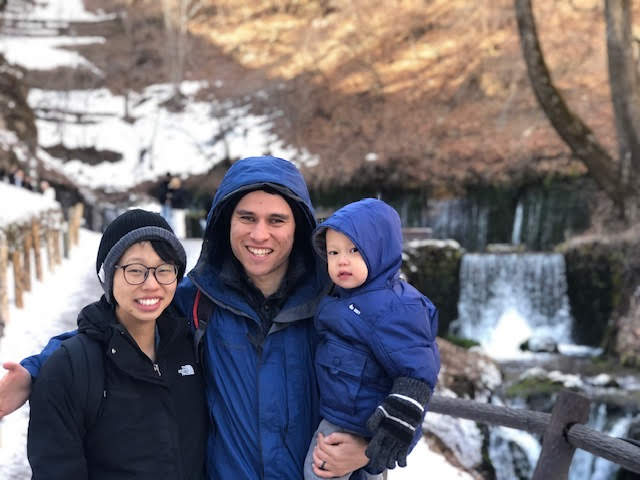
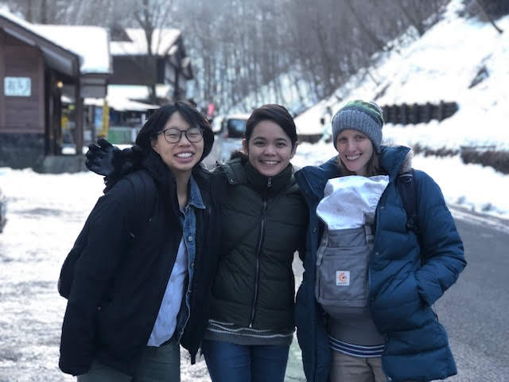
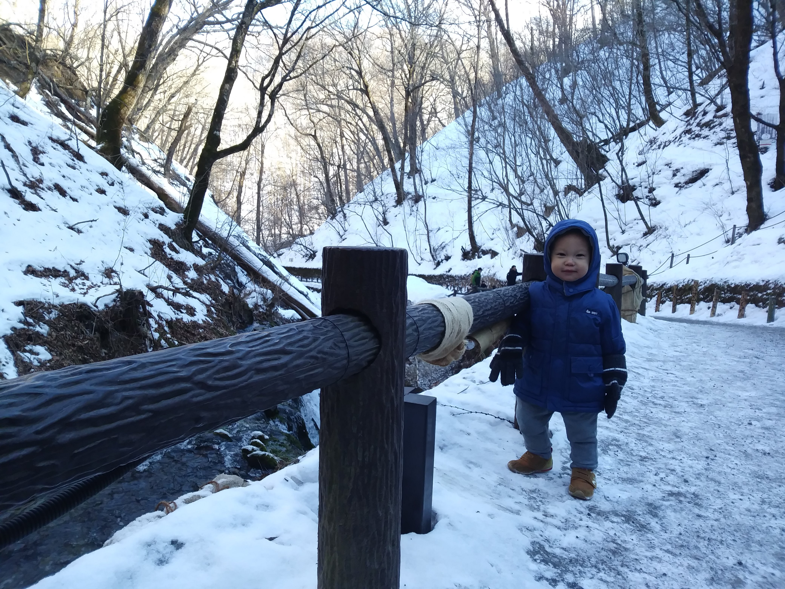
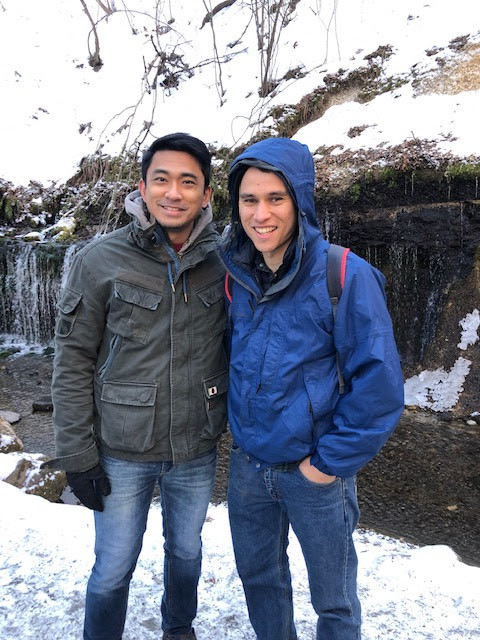

Medical Update
At waterfall in Japan It’s now been almost three weeks since we first arrived in Japan, and there is a lot to be grateful for.
God has cleared the way
Our last email update was brief, but we’d like to take the chance to explain in more detail regarding all the ways God provided in order for all of this to come about.
Several financial, logistical, and even legal difficulties were resolved, making it possible for us to come to Japan
First of all, before we had first come to Japan, we started exploring the possibility with the our friends who live here. At first it looked like it was starting to become more and more of a possibility, and we started to really get excited about this opportunity. We were especially excited since Japan’s healthcare is known to be so strong (often rated higher than that of the USA), we have several close friends and family here (in contrast to Thailand, where we know no one), and our friends here knew of several ways that we could save money on housing – including offering to let us stay with them for the whole three months! This in itself is something to be grateful for – even if it had not been possible for us to go to Japan in the end – since we were reminded of the Christian love (that comes from God) of our brothers and sisters in Christ.
The wives all togetherHowever, right before buying tickets for Tokyo, a series of events brought us to despair of all plans to deliver the baby in Japan. When we started looking into the visa, it turned out to be much more complex than we had thought. When we called the Japanese embassy, they were quite emphatic that it would be nearly impossible. To get a visa would be difficult: there is a strict 90 day limit for tourists with no exceptions allowed. Medical visas can be longer, but require processing (which could delay the whole process further, only making it less likely that it could work). Additionally, to get a medical visa they need to check your bank statements to see that you have more than enough money available (they wouldn’t give an exact number for what they’re looking for, but we can guess that it’s more than we have) and they require a “guarantor” (which could cost thousands just to get a guarantor). On top of that, from a hospital point of view, they told us that Japanese hospitals are full, and hardly ever can accept new patients, and even more than that, they don’t like to accept pregnancies after the third month. Our friends in Japan told us that even though they lived there in Japan, the hospital actually tried to talk them out of delivering in their hospital as well, trying to get them to go back to the USA instead. It seemed hopeless.
At this point, we already had given up and started making plans for potentially going to Thailand instead. But then, at the last moment, our friends in Japan called and told us that the hospital accepted us. I had literally sent what I thought was our final email, telling our friends in Japan that we had given up (we had already started contacting hospitals in Thailand) at 3:22pm, and at 3:33pm I got a response saying we were in. We were floored.
We would make two trips, one to get an initial checkup or two, and then another for the final delivery (which would keep us within the 90 day limit). It turns out that there is a children’s hospital that specializes in disabilities (both for birth defects and continuing care) nearby to where they live! This children’s hospital is a little further away, but is right next to where our friends go to church. The other hospital is closer to where they live, and is one of the best in the country, and both said they would take us.
Our prayer is that we never forget that we worship the God who moves the hearts of kings like water in His hands, and let us pray accordingly.
The first appointment revealed even more details that God prepared for us.
We were able to learn more about our baby’s health that we hadn’t been aware of in Cambodia.
What we knew had been confirmed, the information about his arm and his kidney. We also found out about some size irregularities, potential umbilical cord issues, and his positioning that would be helpful to know for the delivery. We were also able to see a pediatric cardiologist in the same day, which seemed quite amazing. It looks like his heart is normal and it was an awesome experience to see the inner-workings of the heart as God had so intricately created.
Visa issues were resolved as simply as if they never existed
Before this appointment, we were worried that we would possibly have to stay longer than 90 days (which is the limit for the visa) if we didn’t make two roundtrips between Cambodia and Japan. However, we avoided the expense (in time and money) of having to travel back and forth between Japan and Cambodia, since the doctor from the first appointment unexpectedly even went so far as to say that they would go to bat for us and take care of any visa extension that we might need if something came up (this despite everything the embassy had said regarding exceptions to the 90 day limit).
What we only found out after this first appointment is that this same hospital actually had called our friend earlier to try to dissuade him from having us come. In other words, after one nurse told him over the phone that it would work, he told us the hospital would accept us. But after that, another nurse called back and tried to basically tell him it wouldn’t work after all! He had to talk her down, and forcefully tell her we were coming anyways! He didn’t tell us until later, probably to spare our emotions, but this only further shows to me the grace that God gave us in the eyes of the doctor at this first appointment.
This is also a huge relief, since depending on things went for the timing and pregnancy, it is possible that airlines wouldn’t even allow us to fly back to Japan for the second trip there! (Many have strict rules especially after the 32nd week of pregnancy, and even more if there are complications, which there are). Staying in Japan the whole time means we don’t have to worry about any of that, and can rather take the time to rest, read, reflect and pray.
Encouragement from Cambodia
Back in Cambodia, the Cambodian church, as well as our teammates through Action, have all helped out to take care of things back home in Cambodia (which we are especially grateful for due to various problems regarding our water pump and motorcycle!…but that’s a story for another day).
Ryan with Jefferson, a friend from seminary
The Church’s Unity in Christ Demonstrated Through the Provision of His Saints
On top of all of that, several churches and individuals have helped out financially in order to make this possible, even besides notes, calls, emails, and most of all prayers that were made on our behalf, encouraging us and lifting us up before God. Some individuals offered substantial interest-free loans and churches have given love offerings to be used for both this trip and any future expenses that will come up for our son’s health. Even basically complete strangers that we met in Japan, both Japanese and Americans, offered to help financially after hearing about our situation, for no other reason than the fact that we are family in the Lord. One older Japanese couple (who are believers) have helped us by letting us rent their vacant home for a little while and providing extra warm clothes, some furniture, and dishes, etc. for a low cost. The home is a 5-minute walk to the grocery store as well as a couple shops and cafes! Although they hardly speak any English, we have been blessed by their hearts– they have given us home-baked bread, fruit, and have even sewed up some of our towels! I heard this clip from a sermon (Paul Washer on “The Church is One”) and especially after the last month, we can’t deny the fact that a defining characteristic of a Christian is our love for one another. If there was nothing else than this reminder, we would have plenty to be grateful for throughout all of this.
Times of encouragement from the saints in Japan
We have had wonderful opportunities to encourage and be encouraged by our friends and family in Japan. Indeed, hearing about the church in Japan has also burdened our hearts even more for Japan, specifically, and for the world. We are thankful for His faithful laborers here in Japan, especially hearing about the difficult cultural struggles, etc. Overall, we have been refreshed and encouraged by our friends and family here as we have been able to see their daily walks with the Lord, striving to serve Him in their homes and in ministries.
In God’s providence, our time in Japan has turned out to be a well-timed reprieve from daily life and ministry in Cambodia.
Although we miss the church in Cambodia and our fellow laborers for the gospel there, in retrospect we see just how well-timed although this was for us to take a step back, review the last year and a half and reevaluate the direction we’re heading for the future, in terms of long-term ministry.
As an added bonus, due to the nature of Ryan’s work, he is able to continue to work from Japan fairly easily (all he needs is his equipment and internet!). This is a blessing because we know that this kind of trip would be a much more difficult decision to make if he were not able to work at all.
Some more details on how things look for the delivery:
- The due date has been confirmed for April 10th
- We’ve had two appointments so far, and both have been very positive experiences, and we have been grateful for the service and care the doctors and nurses have shown to us. We know that high quality health care is not something to be taken for granted, but we are grateful for it for as long as God continues to provide for it.
- As of right now, there seems to be no need for emergency care at the delivery, which means we can plan to deliver at the closer hospital. We can do follow-up appointments at the specialized children’s hospital that is a little further.
Of course, there are so many more things to be grateful for, but at the very least we wanted to pass these thanksgivings along, hoping you will praise God with us for His provision.